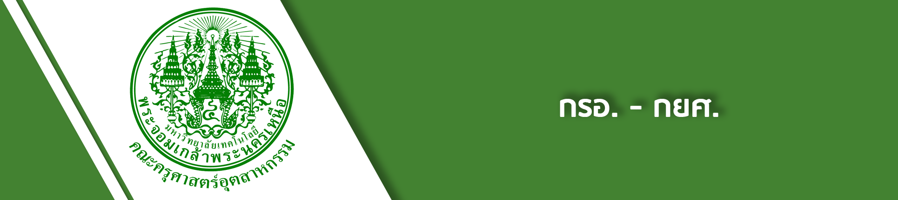
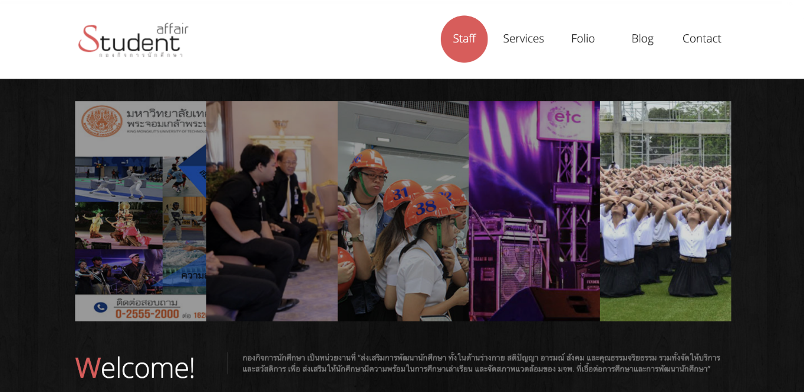

Student Affair

กองทุนเงินกู้ยืมเพื่อการศึกษา
อาคาร 40 ปี ชั้น 4 มจพ.1518 ถ.ประชาราษฎร์ 1 แขวงวงศ์สว่าง เขตบางซื่อ กรุงเทพฯ 10800
Tel. : 0 2555-2000 ต่อ 1314 (กยศ. กรอ.) ต่อ 1150,1161
e-mail : jkp@kmutnb.ac.th
Facebook
Website
กยศ.
Facebook
กองทุน กยศ.
กรอ.
Facebook
กองทุน กรอ.